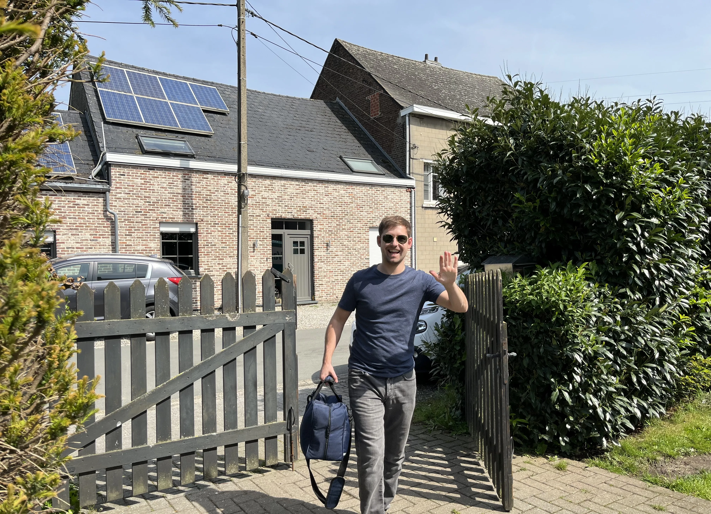

Na een borstoperatie gaat bijna alle aandacht naar de wonde, de uitslag van het weefselonderzoek en de behandeling die nog komt. De schouder komt pas ter sprake wanneer u merkt dat u de kast niet meer open krijgt, uw haar niet meer kunt vastmaken of dat er een strakke streng vanuit de oksel naar de elleboog trekt. Die klachten zijn geen onvermijdelijk gevolg van de ingreep: met de juiste oefeningen op het juiste moment krijgt de grote meerderheid van de patienten haar arm volledig terug. In dit artikel legt PhysioVisit uit wat er precies verandert in uw schouder, welke oefeningen wanneer mogen en wanneer u beter meteen aan de bel trekt.
In het kort
De arm mag na een borstoperatie niet stil hangen, ook niet wanneer heffen nog beperkt is. Rustige, dagelijkse beweging voorkomt verklevingen, houdt de schouder soepel en verhoogt het risico op lymfoedeem niet. Volg altijd het schema van uw chirurg of borstcentrum — en start opnieuw met opbouwen zodra u weer groen licht krijgt.
Wat er Verandert in uw Schouder
Uw borst en uw schouder delen hetzelfde weefsel. De grote borstspier loopt van het borstbeen naar de bovenarm, en de huid van de borst hangt via bindweefsel vast aan de spierlaag eronder. Wordt daar geopereerd, dan geneest dat weefsel met littekenvorming die krimpt en verstrakt. Bij een borstsparende ingreep is dat vaak beperkt tot een strook rond het litteken. Bij een borstamputatie of een reconstructie is het gebied groter, en bij een ingreep in de oksel komt er nog een laag bij: daar liggen de lymfebanen en de zenuwen die naar de arm lopen.
Daar bovenop komt iets wat elke patient herkent: de beschermhouding. De arm wordt tegen het lichaam gehouden, de schouder trekt naar voren en omhoog, en de romp draait weg van de pijnlijke kant. Dat is een logische reflex, maar houdt die enkele weken aan, dan verstijft de schouder om een tweede reden — niet meer door de operatie zelf, maar door het niet-bewegen. Dat mechanisme lijkt sterk op wat er gebeurt bij een frozen shoulder, en het is een pak makkelijker te voorkomen dan te herstellen.
Wat u kunt merken in de weken na de ingreep:
- Beperkte heffing van de arm naar voor en opzij, vaak in combinatie met een trekkend gevoel langs het litteken.
- Een doof of tintelend gebied aan de binnenkant van de bovenarm, na een ingreep in de oksel. Dit komt door een kleine gevoelszenuw die daar loopt en dikwijls geraakt wordt. Het gevoel keert meestal deels terug.
- Een strakke streng in de oksel, soms doorlopend tot in de elleboog of pols.
- Nek- en schouderbladpijn aan dezelfde kant, door de scheve houding.
- Een zwaar of gespannen gevoel in de arm, dat u altijd meldt aan uw arts.
Koorden in de Oksel: het Axillair Web Syndroom
Enkele weken na een okselklieringreep ontdekken veel patienten één of meerdere strakke strengen onder de huid van de oksel. Ze worden zichtbaar wanneer u de arm heft, voelen aan als een gespannen snaar en trekken scherp bij het rekken. Dit heet het axillair web syndroom of koordvorming. Het gaat vermoedelijk om verharde lymfe- en bloedvaatjes die na de ingreep dichtgeklonterd zijn.
Het belangrijkste nieuws: de aandoening is goedaardig en tijdelijk. Bij de meeste patienten verdwijnen de strengen binnen enkele weken tot maanden. Wat helpt, is dagelijks rustig rekken tot u spanning voelt maar geen scherpe pijn, warmte vóór het oefenen, en zachte manuele technieken van uw kinesitherapeut langs het verloop van de streng. Wat niet helpt, is wachten tot het vanzelf overgaat: een schouder die wekenlang niet door de streng heen beweegt, verstijft ondertussen wel degelijk.
Rek tot spanning, niet tot pijn
U hoeft een koorde niet te laten «knappen». Sommige patienten voelen tijdens het rekken een plotse knak waarna de arm verder komt — dat mag gebeuren, maar het is geen doel op zich. Forceren geeft vooral meer pijn en een reflexmatig strakkere schouder. Werk met korte, herhaalde rekbewegingen van tien tot twintig seconden, meerdere keren per dag.
Fase per Fase: Wat Mag Wanneer?
Onderstaande tijdlijn is een algemene richtlijn na een borstoperatie met of zonder ingreep in de oksel. Uw eigen protocol gaat altijd voor: bij een reconstructie met eigen weefsel of met een prothese gelden vaak strengere beperkingen, en zolang er een drain zit houden de meeste ziekenhuizen de arm bewust lager.
schouderbladen
2–3× per dag
en oksel
lichte weerstand
Moet u bestraling ondergaan, dan krijgt de tweede fase extra gewicht. Voor de behandeling moet u de arm doorgaans een hele tijd boven het hoofd kunnen houden, in een vaste positie. Een schouder die daar nog niet toe in staat is, kan de start van de bestraling vertragen. Vraag dus tijdig na welke armhouding vereist is, en oefen daar gericht naartoe.

Zes Oefeningen voor Thuis
Onderstaande oefeningen vormen de kern van wat wij aan huis meegeven. Doe ze rustig, ademend, en stop bij scherpe pijn. Een trekkend gevoel langs het litteken of de streng mag, een stekende pijn in de wonde niet.
| Oefening | Vanaf | Uitvoering | Dosering |
|---|---|---|---|
| Vuist en pols pompen | Dag 1 | Hand open en dicht knijpen, pols op en neer bewegen | 20 ×, 4–5 × per dag |
| Schouderbladen samenknijpen | Dag 1 | Rechtop zitten, schouderbladen naar elkaar toe, borst open | 10 ×, 3 × per dag |
| Elleboog buigen en strekken | Dag 1 | Arm langs het lichaam, elleboog volledig plooien en strekken | 10 ×, 3 × per dag |
| Arm heffen met steun | Zodra toegelaten | Beide handen gevouwen, de gezonde arm helpt de andere omhoog | 10 ×, 3 × per dag |
| Muur beklimmen met de vingers | Week 2–3 | Vingers stap voor stap langs de muur omhoog wandelen, hoogte aftekenen | 5 ×, 2 × per dag |
| Oksel- en littekenrek | Na wondgenezing | Hand in de nek, elleboog rustig naar buiten openen; litteken zacht masseren met vochtinbrengende crème | 10–20 sec, 3 × per dag |
Een handige truc bij de muuroefening: teken met een potlood of een sticker af tot waar u geraakt. Vooruitgang van enkele centimeters per week voelt u niet, maar ziet u wel. Datzelfde principe gebruiken wij ook bij revalidatie na een schouderoperatie: meetbare vooruitgang houdt patienten aan het oefenen op de momenten dat het traag gaat.
Lymfoedeem: Waar u op Let
Werden er okselklieren weggenomen of bestraald, dan is de afvoer van vocht uit de arm blijvend beperkt. Bij een deel van de patienten leidt dat tot lymfoedeem: een aanhoudende zwelling van hand, onderarm of bovenarm. Het risico is het grootst na een volledige okseluitruiming in combinatie met bestraling, en veel kleiner na een sentinelklierprocedure alleen.
Het hardnekkigste misverstand is dat u de arm dan maar beter spaart. Dat klopt niet: uit onderzoek blijkt dat rustig opgebouwde beweging en zelfs krachttraining het risico niet verhogen en de arm net beter laten functioneren. Wat wel telt, is de opbouw. Begin licht, verhoog stapsgewijs, en let op signalen na de inspanning.
- Meld elke blijvende zwelling, spanning of een zwaar gevoel dat na een nacht rust niet weg is.
- Verzorg wondjes aan die arm zorgvuldig en meld roodheid, warmte of koorts meteen — een huidinfectie vraagt snelle behandeling.
- Vermijd knellende mouwen, ringen en horlogebandjes aan de aangedane kant.
- Beweeg dagelijks. Wandelen, fietsen en de oefeningen hierboven ondersteunen de vochtafvoer.
Stelt uw arts lymfoedeem vast, dan volgt een specifiek traject met manuele lymfedrainage, compressie en oefentherapie bij een kinesitherapeut met een opleiding in lymfedrainage. Vraag uw arts om het juiste voorschrift en informeer bij uw verzekering welk deel van de behandeling en van het compressiemateriaal terugbetaald wordt.
Wanneer u Uw Arts Moet Contacteren
Neem contact op met uw arts of borstcentrum bij:
- Een arm die plots dikker wordt of een blijvend zwaar, gespannen gevoel geeft.
- Roodheid, warmte, koorts of een wonde die lekt — mogelijke tekenen van infectie.
- Een bolle, gespannen zwelling ter hoogte van het operatiegebied, die kan wijzen op een vochtophoping (seroom).
- Een schouder die na zes weken nauwelijks vooruitgaat ondanks dagelijks oefenen.
- Toenemende pijn in plaats van geleidelijke verbetering.
- Krachtverlies of aanhoudende tintelingen in hand of arm.
Kinesitherapie aan Huis bij PhysioVisit
In de periode na een borstoperatie stapelen de afspraken zich op: controles, gesprekken, soms chemo of bestraling. Dat is precies het moment waarop een oefenschema in de kast verdwijnt. Daarom komen wij tot bij u. In de regio Grimbergen, Strombeek-Bever, Humbeek, Beigem en Koningslo biedt PhysioVisit kinesitherapie aan huis aan, met sessies die zijn afgestemd op uw energie van die dag.
Een sessie bij u thuis bestaat doorgaans uit het meten van de beweeglijkheid van uw schouder, zacht weefselwerk op het litteken en op eventuele koorden in de oksel, houdingswerk voor nek en schouderbladen, en het bijstellen van uw oefenschema. Waarom die aanpak aan huis voor veel patienten beter werkt dan verplaatsingen naar een praktijk, leest u in vijf voordelen van kinesitherapie aan huis en in zeven situaties waarin thuisbehandeling aangewezen is. Naast orthopedische revalidatie begeleiden wij ook neurologische revalidatie en gangrevalidatie aan huis.
Vraag een voorschrift aan uw arts
Voor kinesitherapie na een borstoperatie heeft u een voorschrift van uw arts nodig. Vraag dat gerust al bij de controle na de ingreep, en laat op het voorschrift vermelden waarvoor de behandeling dient. Informeer daarnaast bij uw verzekering welke tegemoetkoming voor uw situatie geldt.
Veelgestelde Vragen
Stijve Schouder na een Borstoperatie?
Onze kinesitherapeuten komen bij u thuis in de regio Grimbergen, met oefeningen op maat van uw ingreep en uw energie van die dag.
Conclusie
Een borstoperatie raakt meer dan de borst alleen: het litteken, de oksel en de houding bepalen samen hoe vrij uw arm binnen enkele maanden beweegt. De patienten bij wie het het vlotst verloopt, zijn zelden degenen die het hardst rekken — het zijn degenen die elke dag een klein beetje bewegen, ook op de dagen dat het niet vlot. Kleine oefeningen, meerdere keren per dag, binnen de grenzen die uw chirurg meegaf.
Vragen over uw oefenschema, over koorden in de oksel of over kinesitherapie aan huis? Neem contact op met PhysioVisit voor advies op maat.